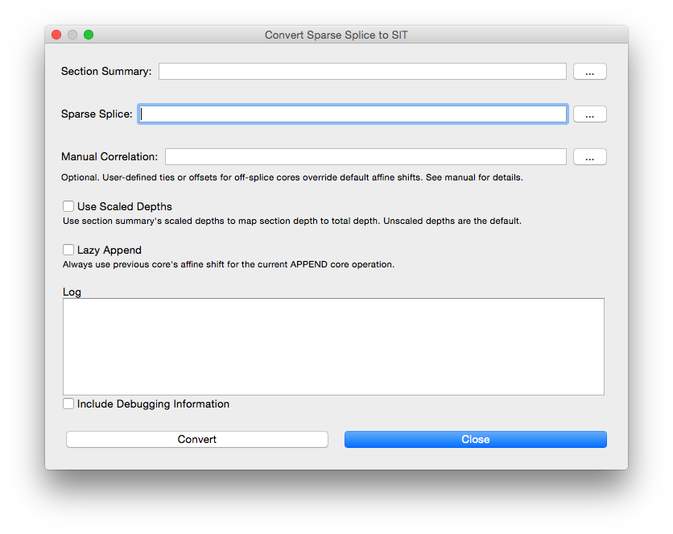
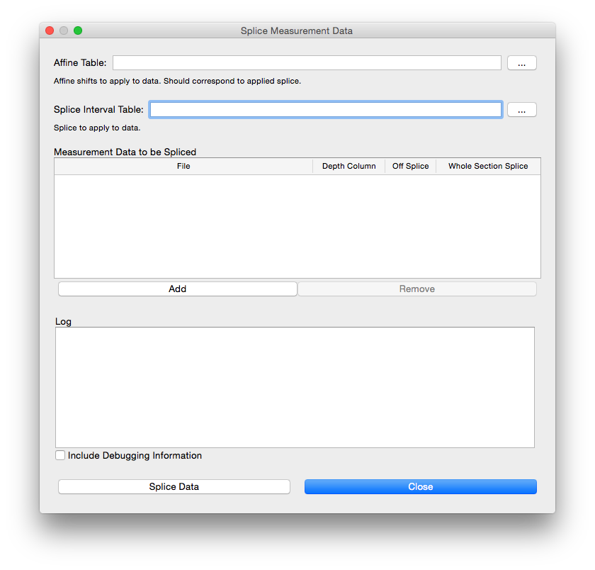

July 19, 2018 version 1.0.2
Feldman is a software utility developed by LacCore/CSDCO to aid in the process of aligning and splicing core sections from multiple holes, and exporting measurement data based on a splice. It runs on Macs (OSX, macOS) and Windows.
Feldman evolved from a handful of conversion scripts written in Python, and owes much of its functionality to the wonderful pandas data analysis library. Feldman source code is available on GitHub.
Feldman reads and writes tabular data files exclusively in comma-separated values (CSV) format.
Microsoft Excel can be used to convert tabular data in other formats (Excel, tab- or space-delimited files, etc.) to CSV using the File > Save As... function and choosing "Comma Separated Values (.csv)" as the output format.
Templates for all formats can be found in the templates folder alongside the Feldman application. Real-world examples of formats can be found in the examples folder.
General requirements:
In addition to columns specific to their purpose, all tabular formats use some or all of the following columns to identify cores and/or sections:
Site: An integer > 0 representing the collection site Hole: One or more capital letters (A, B, ..., Y, Z, AA, AB...) representing a single drilled hole Core: An integer > 0 representing an interval of material collected from parent hole Core Type or Tool: A single capital letter representing the drilling tool used to collect the core Section: An integer > 0 representing a post-extraction subdivision of a core
A list of all formats supported by Feldman follows:
A section summary table contains one row for each section in a project. It is used to translate section depths to total depth, and as a "master list" of a project's core sections. Sections that may not be included in a splice, but are part of measurement data to be spliced, should be included.
A section summary must include the following columns:
Identity Columns: Site, Hole, Core, Core Type/Tool, and Section Top Depth: Top depth of the section, in meters (m) Bottom Depth: Bottom depth of the section, in meters (m) Top Depth Scaled: Scaled (in situ) top depth of the section, in meters (m) Bottom Depth: Scaled (in situ) bottom depth of the section, in meters (m) Curated Length: Length of the curated section, in meters (m)
It may optionally include:
Gaps: One or more [top]-[bottom] pairs separated by spaces, each indicating a gap in the section in centimeters (cm). For example, 10-20 indicates a single gap from 10-20cm section depth. 30-40 60-62.5 80-97 indicates three gaps: 30-40cm, 60-62.5cm, and 80-97cm. Leave value empty for sections with no gaps.
A sparse splice table contains one row for each interval of a sparse splice. Each interval is defined only in section depths, not total depths. The term "sparse" comes from the lack of total depths.
A sparse splice table must include the following columns:
Identity Columns: Site, Hole, Core, and Core Type/Tool Top Section: section in which the interval begins Top Offset: section depth at which interval beings, in centimeters (cm) Bottom Section: section in which the interval ends Bottom Offset: section depth at which interval ends, in centimeters (cm) Splice Type: TIE or APPEND
It may optionally include:
Data Used: Data type used to define this interval Comment: User remarks Gap: User-defined gap between current and preceding interval, in meters (m). Overrides default APPEND behavior.
An affine table contains one row for every core in a project. Each row indicates the core's affine shift distance and associated metadata.
An affine table must include the following columns:
Identity Columns: Site, Hole, Core, and Core Type/Tool Depth CSF-A: Depth of the top of the core, in meters (m) Depth CCSF-A: Shifted/composite depth of the top of the core, in meters (m) Offset: Distance of core shift, in meters (m). Positive values indicate a downward shift, negative upward. Shift Type: Core's shift type. Valid values are TIE, SET, REL, or ANCHOR.
It may optionally include the following:
Differential Offset: Difference between the offset of the current core and the previous core in the hole, in meters (m) Growth Rate: Ratio of core's CCSF-A depth to its CSF-A depth Fixed Core: For a TIE operation, the Hole and Core of the fixed core, e.g. A1, B12, C87 Fixed Tie CSF-A: The CSF-A depth of the tie point on the fixed core, in meters (m) Shifted Tie CSF-A: The CSF-A depth of the tie point on the shifted core, in meters (m) Data Used: Data type used to shift the core Comment: User remarks
All columns will be included in the affine generated by the Sparse to SIT operation.
A splice interval table contains one row for each interval of a splice. It is a superset of a sparse splice. In addition to section depths for the top and bottom of each interval, it includes the total depths in CSF-A and CCSF-A.
Identity Columns: Site, Hole, Core, and Core Type/Tool Top Section: section in which the interval begins Top Offset: section depth at which interval begins, in centimeters (cm) Top Depth CSF-A: total depth at which interval begins, in meters (m) Top Depth CCSF-A: shifted/composite depth at which interval begins, in meters (m) Bottom Section: section in which the interval ends Bottom Offset: section depth at which interval ends, in centimeters (cm) Bottom Depth CSF-A: total depth at which interval ends, in meters (m) Bottom Depth CCSF-A: shifted/composite depth at which interval ends, in meters (m) Splice Type: TIE or APPEND
It may optionally include:
Data Used: Data type used to define this interval Comment: User remarks Gap: User-defined gap between current and preceding interval, in meters (m). Overrides default APPEND behavior.
All columns will be included in the splice interval table generated by the Sparse to SIT operation.
Manual correlations override Feldman's default affine shifts for off-splice cores when converting a Sparse Splice to a SIT and affine table. There are two manual correlation formats described below. Either format can be used in the Sparse to SIT dialog.
A manual offset table contains one or more rows of data, each indicating a user-defined offset for a single off-splice core.
A manual offset table must include the following columns:
Site: The off-splice site Hole: The off-splice hole Core: The off-splice core Offset: Distance to shift core, in meters (m)
Each off-splice core will be shifted by the distance specified in Offset, with affine shift type SET.
A manual correlation table contains one or more rows of data, each indicating a user-defined alignment of an off-splice core with an on-splice core. The resulting affine shift will override the default affine shift for the off-splice core. Each row consists of two sets of Identity Columns, and the point on each core to be aligned.
A manual correlation TIE table must include the following columns:
Site1: The off-splice site Hole1: The off-splice hole Core1: The off-splice core Tool1: The off-splice tool Section1: The off-splice section SectionDepth1: Section depth (cm) of the off-splice section to be aligned with on-splice section Site2: The on-splice site Hole2: The on-splice hole Core2: The on-splice core Tool2: The on-splice tool Section2: The on-splice section SectionDepth2: Section depth (cm) of the on-splice section to be aligned with off-splice section
Each off-splice core will be shifted to align the specified section depths, with affine shift type TIE.
Note that, unlike other formats, the manual correlation table format requires the use of "Tool1" and "Tool2". "Core Type 1" and "Core Type 2" are not acceptable column names.
A measurement data table contains one or more measurements taken at a given depth in a core section.
A measurement data table must include the following columns:
Identity Columns: Site, Hole, Core, Core Type/Tool, Section indicating the source of the measurement(s) [Depth Column]: total depth of the measurement(s) of the core section, in meters (m). Depths in the specified column will be compared to depths in the Splice Interval Table to determine whether a measurement is within a given splice interval.
The Depth Column is selected in the Splice Measurement Data dialog, and can have any name in the input file. The only requirement is that the Depth Column must contain only numeric values. If any alphabetic characters are included in a column (other than its name), it cannot be selected as the Depth Column.
Any number of measurement columns and additional columns (comments etc.) may be included. They will be included, unaltered, in the output of Splice Measurment Data.
Output Vocabulary: determines whether the IODP term "Core Type" or the LacCore term "Tool" is used as a column name in output. IODP "Core Type" is the default. Feldman will accept "Core Type" or "Tool" as input regardless of this setting.
The Convert Sparse Splice to SIT and Splice Measurement Data buttons open the dialogs of the same name.
Given a section summary and sparse splice, Feldman will generate an affine table and splice interval table (SIT).

The generated affine and SIT are written to the same directory as the input sparse splice file. They use the sparse splice's filename plus "-affine" or "-SIT". For example, for a sparse splice file named MySparseSplice.csv, the resulting affine and SIT are named MySparseSplice-affine.csv and MySparseSplice-SIT.csv, respectively.
Click the "..." buttons to select section summary and sparse splice files as input. Alternately, files can be dragged and dropped into the interface.
Manual Correlation: Optional. By default, Feldman sets the affine offset of an off-splice core to the affine offset of the nearest on-splice core in the same hole. Default affine offsets can be overriden by providing a manual correlation. Manual Correlation Tie Tables or Manual Offset Tables are accepted as valid Manual Correlation input.
Use Scaled Depths: if checked, the section summary's scaled depths will be used to map section depth to total depth. Unscaled depths are the default.
Lazy Append: if checked, for an APPEND operation, the affine shift of the previous core in the splice will be used for the current core, even if they're from different holes. By default, the gap between the previous core's bottom and the current core's top will be computed in scaled depth and used for the current core's affine shift.
Once input data and options are selected, click Convert. Major steps of the conversion process will be noted in the Log window. If the "Include Debugging Information" checkbox is checked, a far more detailed account of the process is provided, which can be helpful in the case of errors or unexpected outputs.
Given an affine and splice interval table (SIT), and one or more measurement data files, Feldman will splice each measurement data file, generating a new file including only rows whose Depth is within the range of a splice interval.

Spliced measurement data is written to the same directory as the input measurement data file, with "-spliced" appended to the input file's name. For example, for measurement data files MyProject_XRF.csv and MyProject_MSCL.csv, MyProject_XRF-spliced.csv and MyProject_MSCL-spliced.csv will be generated.
Three columns are added to the generated file:
Splice Depth: the CCSF-A depth of the measurement Offset: the affine shift of the core in which the measurement was taken On-Splice: 'splice' or 'off-splice', indicating whether the measurement is on- or off-splice, respectively
If the input file contains one or more columns starting with "Sediment Depth", these columns will be inserted immediately after the rightmost "Sediment Depth" column on output. Otherwise they'll be inserted in the leftmost position.
Click the "..." buttons to select input affine and SIT files.
Click the "Add/Remove" buttons to add/remove one or more measurement data files to the list.
Alternately, files can be selected by dragging them into the interface.
Select the column to use as the Depth Column for each measurement data file to be spliced. Only those columns with numeric values will be included in this list.
Off Splice: if checked, rows of data that are off-splice are included with On-Splice value 'off-splice'. If the input measurement data file contains rows from sections that are not part of the input affine table, such rows will be written to a file with "-unwritten" appended to the input file's name.
Whole Section Splice: if checked, all rows of data from on-splice core sections will be included with On-Splice value 'splice'. For example, consider a splice interval with top section 1 at depth 20cm and bottom section 2 at depth 90cm. If Whole Section is checked, all measurements from section 1 and 2 will be included, even those above 20cm in section 1 and those below 90cm in section 2. Measurements from section 3, however, will not be included because that section isn't part of the splice interval.
Once input data and options are selected, click Splice Data. Major steps of the splicing process will be noted in the Log window. If the "Include Debugging Information" checkbox is checked, a far more detailed account of the process is provided, which can be helpful in the case of errors or unexpected outputs.